Contenido
[ocultar]Hardware libre 2

|
Open Source Hardware Definition v1.0 |
- Esta hardware no tiene restricciones
| 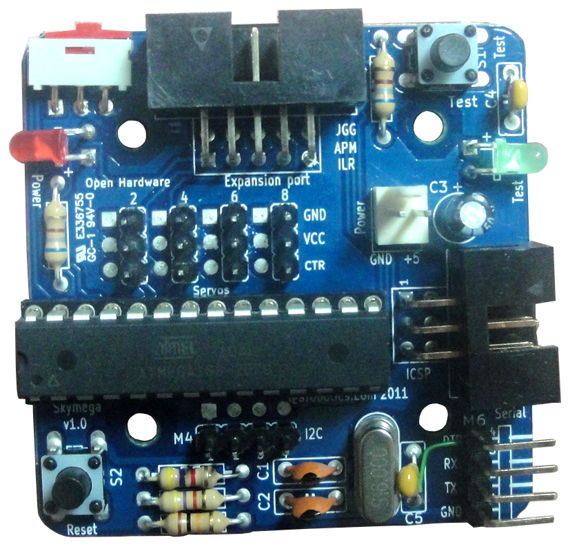 |
SkyMega Tarjeta Skymega. Control de robots modulares. Compatible con Arduino |
2011 |
| Skypads_2.0 Tarjeta de prueba con 8 pulsadores en cruceta para conectarse a la Skypic |
2010 | |

|
Skypads 1.0 Tarjeta de prueba con 8 pulsadores para conectarse a la Skypic |
2010 |
| Monolito Biblioteca de componentes para Kicad |
2009 | |
 |
Skycube Tarjeta Skycube. Control de robots modulares |
2009 |
| Skypic 2009 Tarjeta entrenadora para los microcontroladores PIC |
2009 | |
| Tarjeta Chronopic Medición del tiempo de vuelo (Proyecto Chronojump) |
2008 | |
|
|
Freeleds Tarjeta de prueba con 8 leds para conectar a la skypic |
2005 |
Hardware libre tipo 1

|
Open Source Hardware Definition v1.0 |
- Harware con 1 restricción:
- Diseñado con software propietario
| SkyControl Tarjeta de control para FlatBot |
2008 | |
| Opto-triac Tarjeta de prueba con un optoacoplador para controlar un triac. |
2008 | |
|
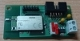 |
SkyBlueTooth Tarjeta para conectar la Skypic mediante BlueTooth |
2007 |
|
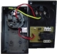 |
SkyLamp. Activación/Desactivación de circuitos mediante un relé a través del USB |
2007 |
|
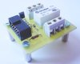 |
Freerelé Tarjeta con un relé para conectarse directamente a la Skypic |
2006 |
|
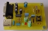 |
USB-RS232 Placa conversora de USB a RS232 compatible con Linux y Windows. |
2005 |
|
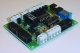 |
Sky293 Tarjeta de potencia para motores DC y lectura de sensores CNY70. Compatible con la tarjeta Skypic |
2004 |
|
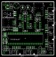 |
GEYDi Tarjeta entrenadora para las familias de PICs P18F452 y P16F87XA de 40 pines |
2003 |
|
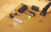 |
Picmin Entrenadora mínima para el PIC. |
2002 |
|
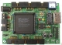 |
JPS-XPC84 Tarjeta de desarrollo para las FPGA de Xilinx de la familia 4000 o Spartan, con encapsulados PLCC84 |
2002 |
|
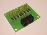 |
PCT-LED Tarjeta de prueba con 8 leds y conector para cable plano de bus |
2001 |
Hardware libre tipo 2
|
|
Open Source Hardware Definition v1.0 |
- Hardware con 2 restricciones
- Diseñado con software propietario
- Necesario sistema operativo propietario
| 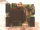 |
BT6811 Control autónomo de 4 servos. Microcontrolador 68hc11 |
1999 |

|
PCBOT Control de circuitos desde el PC. 8 Salidas/entradas digitales. 4 Motores. |
1998 |
| 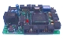 |
CT6811 Tarjeta entrenadora para el microcontrolador 68HC11 de Motorola |
1995 |
| 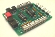 |
CT293 Tarjeta de potencia para motores y lectura de sensores del tipo CNY70 |
1995 |
| TIBI | Tarjeta Interface Bus ISA. |
Hardware NO libre
| |
GPBOT Tarjeta de control laboratorio de Robótica Universidad Autónoma de Madrid |
2004 |


Documentación sobre hardware libre
- Hardware libre I y Hardware libre II (Septiembre 2009)